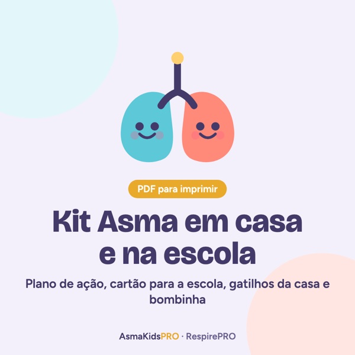
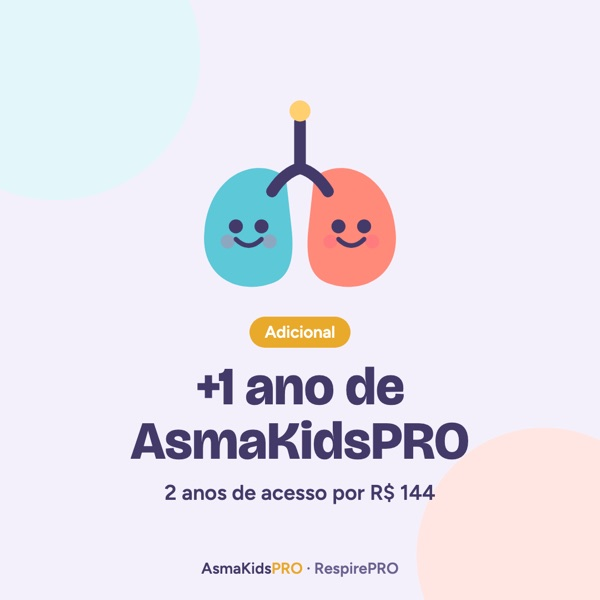

Para começar hoje
AsmaKidsPRO para a família
R$ 97 por 12 meses
ou 12x de R$ 10,03 no cartão
- Acesso por 12 meses, em até 3 aparelhos
- Funciona no celular, Android ou iPhone, pelo navegador
- Recebe a receita de jogos da fisio, se ela usar o PediPRO
- Suporte pelo WhatsApp
Garantia de 7 dias: se não for para vocês, devolvemos o valor. Tem o cupom da sua fisio? Use na página de pagamento.
Na página de pagamento, você também pode levar:

Kit Asma em casa e na escola · 14 páginas para imprimir+ R$ 27 Kit Campeão do Sopro · figurinhas e diploma+ R$ 17
Kit Campeão do Sopro · figurinhas e diploma+ R$ 17
Mais 1 ano de acesso com desconto+ R$ 47